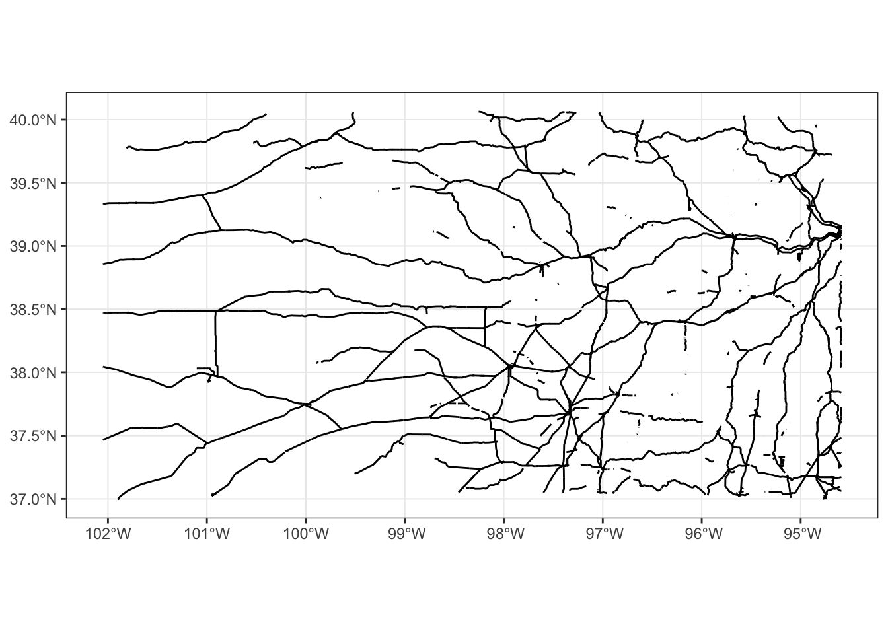
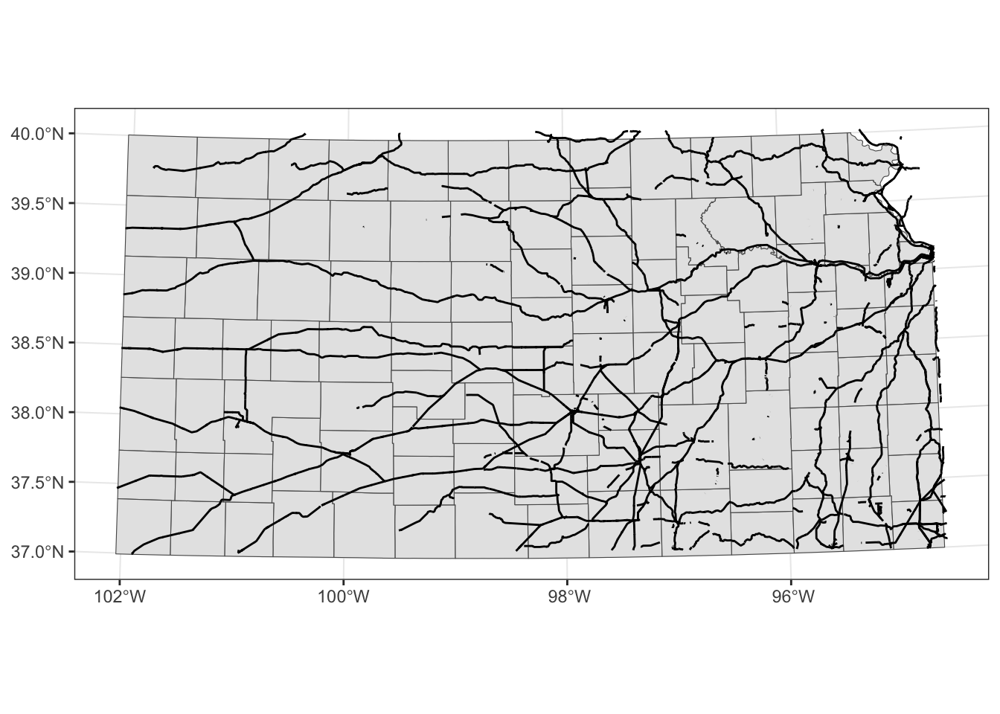
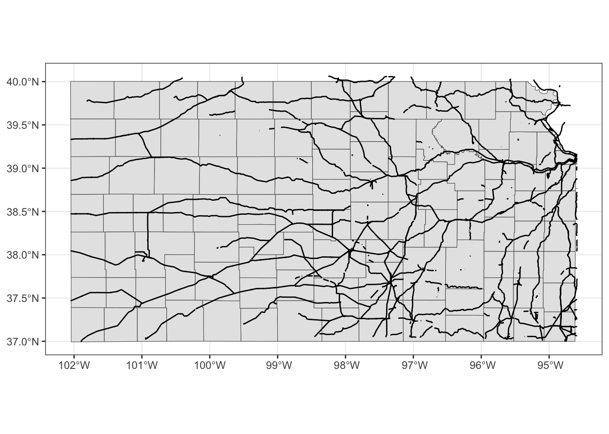
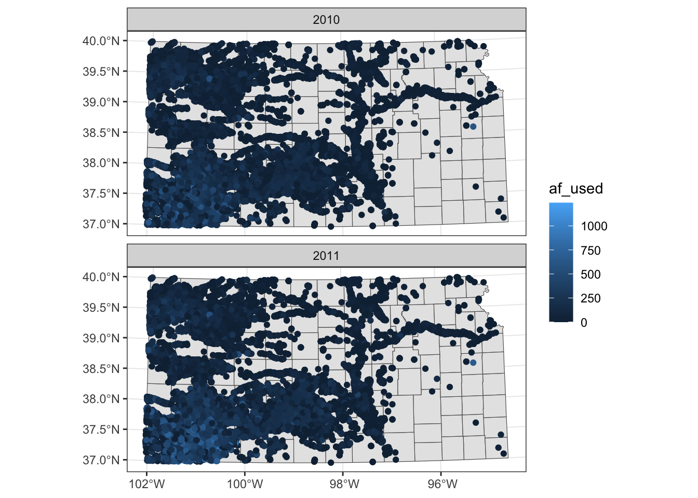
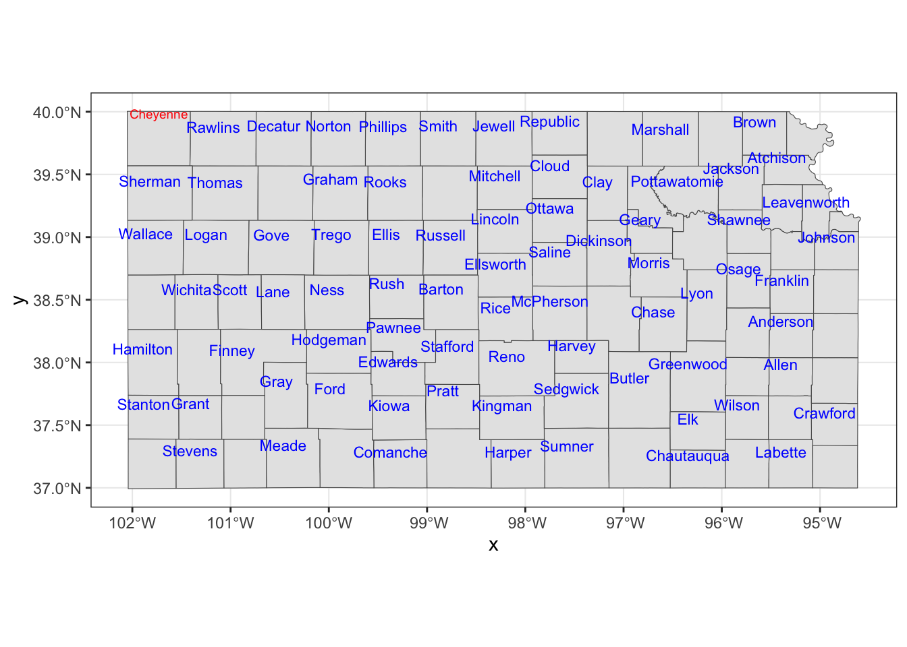

8.1 Creating maps from sf objects
This section explains how to create maps from vector data stored as an sf object via geom_sf().
8.1.1 Datasets
The following datasets will be used for illustrations.
Points
af_used: total annual groundwater pumping at individual irrigation wells
#--- read in the KS wells data ---#
(
gw_KS_sf <- readRDS("Data/gw_KS_sf.rds")
)Simple feature collection with 56225 features and 3 fields
Geometry type: POINT
Dimension: XY
Bounding box: xmin: -102.0495 ymin: 36.99561 xmax: -94.70746 ymax: 40.00191
Geodetic CRS: NAD83
First 10 features:
well_id year af_used geometry
1 1 2010 67.00000 POINT (-100.4423 37.52046)
2 1 2011 171.00000 POINT (-100.4423 37.52046)
3 3 2010 30.93438 POINT (-100.7118 39.91526)
4 3 2011 12.00000 POINT (-100.7118 39.91526)
5 7 2010 0.00000 POINT (-101.8995 38.78077)
6 7 2011 0.00000 POINT (-101.8995 38.78077)
7 11 2010 154.00000 POINT (-101.7114 39.55035)
8 11 2011 160.00000 POINT (-101.7114 39.55035)
9 12 2010 28.17239 POINT (-95.97031 39.16121)
10 12 2011 89.53479 POINT (-95.97031 39.16121)Polygons
(
KS_county <- tigris::counties(state = "Kansas", cb = TRUE) %>%
st_as_sf() %>%
st_transform(st_crs(gw_KS_sf))
)Simple feature collection with 105 features and 12 fields
Geometry type: MULTIPOLYGON
Dimension: XY
Bounding box: xmin: -102.0517 ymin: 36.99302 xmax: -94.58841 ymax: 40.00316
Geodetic CRS: NAD83
First 10 features:
STATEFP COUNTYFP COUNTYNS AFFGEOID GEOID NAME
48 20 075 00485327 0500000US20075 20075 Hamilton
210 20 149 00485038 0500000US20149 20149 Pottawatomie
211 20 003 00484971 0500000US20003 20003 Anderson
409 20 033 00484986 0500000US20033 20033 Comanche
415 20 189 00485056 0500000US20189 20189 Stevens
601 20 161 00485044 0500000US20161 20161 Riley
602 20 025 00484982 0500000US20025 20025 Clark
603 20 163 00485045 0500000US20163 20163 Rooks
810 20 091 00485010 0500000US20091 20091 Johnson
894 20 187 00485055 0500000US20187 20187 Stanton
NAMELSAD STUSPS STATE_NAME LSAD ALAND AWATER
48 Hamilton County KS Kansas 06 2580958328 2893322
210 Pottawatomie County KS Kansas 06 2177507162 54149295
211 Anderson County KS Kansas 06 1501263686 10599981
409 Comanche County KS Kansas 06 2041681089 3604155
415 Stevens County KS Kansas 06 1883593926 464936
601 Riley County KS Kansas 06 1579116499 32002514
602 Clark County KS Kansas 06 2524300310 6603384
603 Rooks County KS Kansas 06 2306454194 11962259
810 Johnson County KS Kansas 06 1226694710 16303985
894 Stanton County KS Kansas 06 1762103387 178555
geometry
48 MULTIPOLYGON (((-102.0446 3...
210 MULTIPOLYGON (((-96.72833 3...
211 MULTIPOLYGON (((-95.51879 3...
409 MULTIPOLYGON (((-99.54467 3...
415 MULTIPOLYGON (((-101.5566 3...
601 MULTIPOLYGON (((-96.96095 3...
602 MULTIPOLYGON (((-100.1072 3...
603 MULTIPOLYGON (((-99.60527 3...
810 MULTIPOLYGON (((-95.05647 3...
894 MULTIPOLYGON (((-102.0419 3...Lines
(
KS_railroads <- st_read(dsn = "Data/", layer = "tl_2015_us_rails") %>%
st_crop(KS_county)
)Simple feature collection with 5796 features and 3 fields
Geometry type: GEOMETRY
Dimension: XY
Bounding box: xmin: -102.0517 ymin: 36.99769 xmax: -94.58841 ymax: 40.06304
Geodetic CRS: NAD83
First 10 features:
LINEARID FULLNAME MTFCC
2124 11051038759 Bnsf RR R1011
2136 11051038771 Bnsf RR R1011
2141 11051038776 Bnsf RR R1011
2186 11051047374 Rock Island RR R1011
2240 11051048071 Burlington Northern Santa Fe RR R1011
2252 11051048083 Burlington Northern Santa Fe RR R1011
2256 11051048088 Burlington Northern Santa Fe RR R1011
2271 11051048170 Chicago Burlington and Quincy RR R1011
2272 11051048171 Chicago Burlington and Quincy RR R1011
2293 11051048193 Chicago Burlington and Quincy RR R1011
geometry
2124 LINESTRING (-94.58841 39.15...
2136 LINESTRING (-94.59017 39.11...
2141 LINESTRING (-94.58841 39.15...
2186 LINESTRING (-94.58893 39.11...
2240 LINESTRING (-94.58841 39.15...
2252 LINESTRING (-94.59017 39.11...
2256 LINESTRING (-94.58841 39.15...
2271 LINESTRING (-94.58862 39.15...
2272 LINESTRING (-94.58883 39.11...
2293 LINESTRING (-94.58871 39.11...8.1.2 Basic usage of geom_sf()
geom_sf() allows for visualizing sf objects. Conveniently, geom_sf() automatically detects the geometry type of spatial objects stored in sf and draw maps accordingly. For example, the following codes create maps of Kansas wells (points), Kansas counties (polygons), and railroads in Kansas (lines):
(
g_wells <- ggplot(data = gw_KS_sf) +
geom_sf()
)(
g_county <- ggplot(data = KS_county) +
geom_sf()
)
(
g_rail <- ggplot(data = KS_railroads) +
geom_sf()
)
As you can see, the different geometry types are handled by a single geom type, geom_sf(). Notice also that neither of the x-axis (longitude) and y-axis (latitude) is provided to geom_sf() in the example codes above. When you create a map, longitude and latitude are always used for x- and y-axis. geom_sf() is smart enough to know the geometry types and draw spatial objects accordingly.
8.1.3 Specifying the aesthetics
There are various aesthetics options you can use. Available aesthetics vary by the type of geometry. This section shows the basics of how to specify the aesthetics of maps. Finer control of aesthetics will be discussed later.
8.1.3.1 Points
- color: color of the points
- fill: available for some shapes (but likely useless)
- shape: shape of the points
- size: size of the points (rarely useful)
For illustration here, lets focus on the wells in one county so it is easy to detect the differences across various aesthetics configurations.
#--- wells in Stevens County ---#
gw_Stevens <- KS_county %>%
filter(NAME == "Stevens") %>%
st_crop(gw_KS_sf, .)example 1
- color: dependent on
af_used(the amount of groundwater extraction) - size: constant across the points (bigger than default)
(
ggplot(data = gw_Stevens) +
geom_sf(aes(color = af_used), size = 2)
)
example 2
- color: constant across the points (blue)
- size: dependent on
af_used - shape: constant across the points (square)
(
ggplot(data = gw_Stevens) +
geom_sf(aes(size = af_used), color = "blue", shape = 15)
)
example 3
- color: dependent on whether located east of west of -101.3 in longitude
- shape: dependent on whether located east of west of -101.3 in longitude
(
gw_Stevens %>%
cbind(., st_coordinates(.)) %>%
mutate(east_west = ifelse(X < -101.3, "west", "east")) %>%
ggplot(data = .) +
geom_sf(aes(shape = east_west, color = east_west))
)
8.1.3.2 Polygons
- color: color of the borders of the polygons
- fill: color of the inside of the polygons
- shape: not available
- size: not available
example 1
- color: constant (red)
- fill: constant (dark green)
ggplot(data = KS_county) +
geom_sf(color = "red", fill = "darkgreen")
example 2
- color: default (black)
- fill: dependent on the total amount of pumping in 2010
# In knitting the book, dplyr operations like filter, mutate cause an error even though they would not produce any errors when you are running on an R session. The solution used here is to create the object to be used and save it, and then read it.
# KS_county_with_pumping <-
# gw_KS_sf %>%
# #--- only year == 2010 ---#
# dplyr::filter(year == 2010) %>%
# #--- get total pumping by county ---#
# aggregate(., KS_county, sum, na.rm = TRUE)
# saveRDS(KS_county_with_pumping, "Data/KS_county_with_pumping.rds")
KS_county_with_pumping <- readRDS("Data/KS_county_with_pumping.rds")KS_county_with_pumping <-
gw_KS_sf %>%
#--- only year == 2010 ---#
dplyr::filter(year == 2010) %>%
#--- get total pumping by county ---#
aggregate(., KS_county, sum, na.rm = TRUE)
ggplot(data = KS_county_with_pumping) +
geom_sf(aes(fill = af_used))8.1.4 Plotting multiple spatial objects in one figure
You can combine all the layers created by geom_sf() additively so they appear in a single map:
ggplot() +
#--- this one uses KS_wells ---#
geom_sf(data = gw_KS_sf, size = 0.4) +
#--- this one uses KS_county ---#
geom_sf(data = KS_county) +
#--- this one uses KS_railroads ---#
geom_sf(data = KS_railroads, color = "red")
Oops, you cannot see wells (points) in the figure. The order of geom_sf() matters. The layer added later will come on top of the preceding layers. Thats why wells are hidden beneath Kansas counties. So, lets do this:
ggplot(data = KS_county) +
#--- this one uses KS_county ---#
geom_sf() +
#--- this one uses KS_county ---#
geom_sf(data = gw_KS_sf, size = 0.4) +
#--- this one uses KS_railroads ---#
geom_sf(data = KS_railroads, color = "red")
Better.
Note that since you are using different datasets for each layer, you need to specify the dataset to use in each layer except for the first geom_sf() which inherits data = KS_wells from ggplot(data = KS_wells). Of course, this will create exactly the same map:
(
g_all <- ggplot() +
#--- this one uses KS_county ---#
geom_sf(data = KS_county) +
#--- this one uses KS_wells ---#
geom_sf(data = gw_KS_sf, size = 0.4) +
#--- this one uses KS_railroads ---#
geom_sf(data = KS_railroads, color = "red")
)There is no rule that you need to supply data to ggplot().87
Alternatively, you could add fill = NA to geom_sf(data = KS_county) instead of switching the order.
ggplot() +
#--- this one uses KS_wells ---#
geom_sf(data = gw_KS_sf, size = 0.4) +
#--- this one uses KS_county ---#
geom_sf(data = KS_county, fill = NA) +
#--- this one uses KS_railroads ---#
geom_sf(data = KS_railroads, color = "red")
This is fine as long as you do not intend to color-code counties.
8.1.5 CRS
ggplot() uses the CRS of the sf to draw a map. For example, right now the CRS of KS_county is this:
st_crs(KS_county)Coordinate Reference System:
User input: EPSG:4269
wkt:
GEOGCS["NAD83",
DATUM["North_American_Datum_1983",
SPHEROID["GRS 1980",6378137,298.257222101,
AUTHORITY["EPSG","7019"]],
TOWGS84[0,0,0,0,0,0,0],
AUTHORITY["EPSG","6269"]],
PRIMEM["Greenwich",0,
AUTHORITY["EPSG","8901"]],
UNIT["degree",0.0174532925199433,
AUTHORITY["EPSG","9122"]],
AUTHORITY["EPSG","4269"]]Lets convert the CRS to WGS 84/ UTM zone 14N (EPSG code: 32614), make a map, and compare the ones with different CRS side by side.
g_32614 <- st_transform(KS_county, 32614) %>%
ggplot(data = .) +
geom_sf()g_county / g_32614
Alternatively, you could use coord_sf() to alter the CRS on the map, but not the CRS of the sf object itself.
ggplot() +
#--- epsg: 4269 ---#
geom_sf(data = KS_county) +
coord_sf(crs = 32614)When multiple layers are used for map creation, the CRS of the first layer is applied for all the layers.
ggplot() +
#--- epsg: 32614 ---#
geom_sf(data = st_transform(KS_county, 32614)) +
#--- epsg: 4269 ---#
geom_sf(data = KS_railroads)
coord_sf() applies to all the layers.
ggplot() +
#--- epsg: 32614 ---#
geom_sf(data = st_transform(KS_county, 32614)) +
#--- epsg: 4269 ---#
geom_sf(data = KS_railroads) +
#--- using 4269 ---#
coord_sf(crs = 4269)
Finally, you could limit the geographic scope of the map to be created by adding xlim() and ylim().
ggplot() +
#--- epsg: 32614 ---#
geom_sf(data = st_transform(KS_county, 32614)) +
#--- epsg: 4269 ---#
geom_sf(data = KS_railroads) +
#--- using 4269 ---#
coord_sf(crs = 4269) +
#--- limit the geographic scope of the map ---#
xlim(-99, -97) +
ylim(37, 39)
8.1.6 Faceting
Faceting splits the data into groups and generates a figure for each group, where the aesthetics of the figures are consistent across the groups. Faceting can be done using facet_wrap() or facet_grid(). Lets try to create a map of groundwater use at wells by year where the points are color differentiated by the amount of groundwater use (af_used).
ggplot() +
#--- KS county boundary ---#
geom_sf(data = st_transform(KS_county, 32614)) +
#--- wells ---#
geom_sf(data = gw_KS_sf, aes(color = af_used)) +
#--- facet by year (side by side) ---#
facet_wrap(. ~ year)
Note that the above code creates a single legend that applies to both panels, which allows you to compare values across panels (years here). Further, also note that the values of the faceting variable (year) are displayed in the gray strips above the maps. You can have panels stacked vertically by using the ncol option (or nrow also works) in facet_wrap(. ~ year) as follows:
ggplot() +
#--- KS county boundary ---#
geom_sf(data = st_transform(KS_county, 32614)) +
#--- wells ---#
geom_sf(data = gw_KS_sf, aes(color = af_used)) +
#--- facet by year (side by side) ---#
facet_wrap(. ~ year, ncol = 1)
Two-way faceting is possible by supplying a variable name (or expression) in place of . in facet_wrap(. ~ year). The code below uses an expression (af_used > 200) in place of .. This divides the dataset by whether water use is greater than 200 or not and by year.
ggplot() +
#--- KS county boundary ---#
geom_sf(data = st_transform(KS_county, 32614)) +
#--- wells ---#
geom_sf(data = gw_KS_sf, aes(color = af_used)) +
#--- facet by year (side by side) ---#
facet_wrap((af_used > 200) ~ year)
The values of the expression (TRUE or FALSE) appear in the gray strips, which is not informative. We will discuss in detail how to control texts in the strips section 8.5.
If you feel like the panels are too close to each other, you could provide more space between them using panel.spacing (both vertically and horizontally), panel.spacing.x (horizontally), and panel.spacing.y (vertically) options in theme(). Suppose you would like to place more space between the upper and lower panels, then you use panel.spacing.y like this:
ggplot() +
#--- KS county boundary ---#
geom_sf(data = st_transform(KS_county, 32614)) +
#--- wells ---#
geom_sf(data = gw_KS_sf, aes(color = af_used)) +
#--- facet by year (side by side) ---#
facet_wrap((af_used > 200) ~ year) +
#--- add more space between panels ---#
theme(panel.spacing.y = unit(2, "lines"))
8.1.7 Adding texts (labels) on a map
You can add labels to a map using geom_sf_text() or geom_sf_label() and providing aes(label = x) inside it where x is the variable that contains labels to print on a map.
ggplot() +
#--- KS county boundary ---#
geom_sf(data = KS_county) +
geom_sf_text(
data = KS_county,
aes(label = NAME),
size = 3,
color = "blue"
)If you would like to have overlapping labels not printed, you can add check_overlap = TRUE.
ggplot() +
#--- KS county boundary ---#
geom_sf(data = KS_county) +
geom_sf_text(
data = KS_county,
aes(label = NAME),
check_overlap = TRUE,
size = 3,
color = "blue"
)
The nudge_x and nudge_y options let you shift the labels.
ggplot() +
#--- KS county boundary ---#
geom_sf(data = KS_county) +
geom_sf_text(
data = KS_county,
aes(label = NAME),
check_overlap = TRUE,
size = 3,
color = "blue",
nudge_x = -0.1,
nudge_y = 0.1
)
If you would like a fine control on a few objects, you can always work on them separately.
Cheyenne <- filter(KS_county, NAME == "Cheyenne")
KS_less_Cheyenne <- filter(KS_county, NAME != "Cheyenne")ggplot() +
#--- KS county boundary ---#
geom_sf(data = KS_county) +
geom_sf_text(
data = KS_less_Cheyenne,
aes(label = NAME),
check_overlap = TRUE,
size = 3,
color = "blue",
nudge_x = -0.1,
nudge_y = 0.1
) +
geom_sf_text(
data = Cheyenne,
aes(label = NAME),
size = 2.5,
color = "red",
nudge_y = 0.2
)
You could also use annotate() to place texts on a map, which can be useful if you would like to place arbitrary texts that are not part of sf object.
ggplot() +
#--- KS county boundary ---#
geom_sf(data = KS_county) +
geom_sf_text(
data = KS_less_Cheyenne,
aes(label = NAME),
check_overlap = TRUE,
size = 3,
color = "blue",
nudge_x = -0.1,
nudge_y = 0.1
) +
#--- use annotate to add texts on the map ---#
annotate(
geom = "text",
x = -102,
y = 39.8,
size = 3,
label = "Cheyennes",
color = "red"
)
As you can see, you need to tell where the texts should be placed with x and y, provide the texts you want on the map to label.